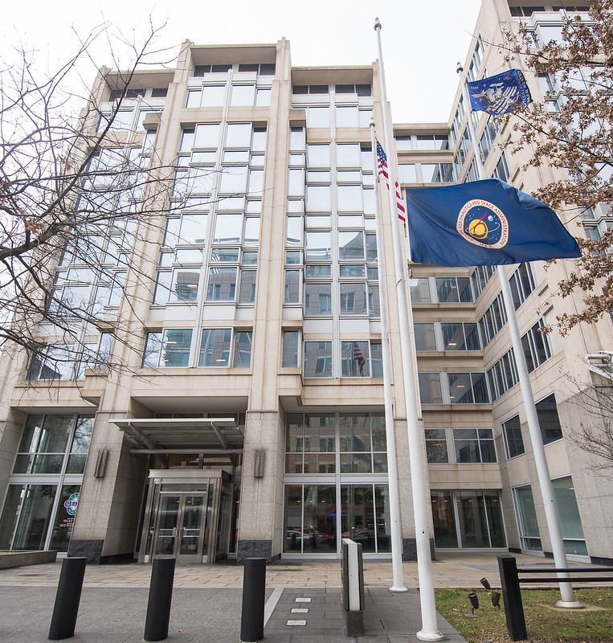
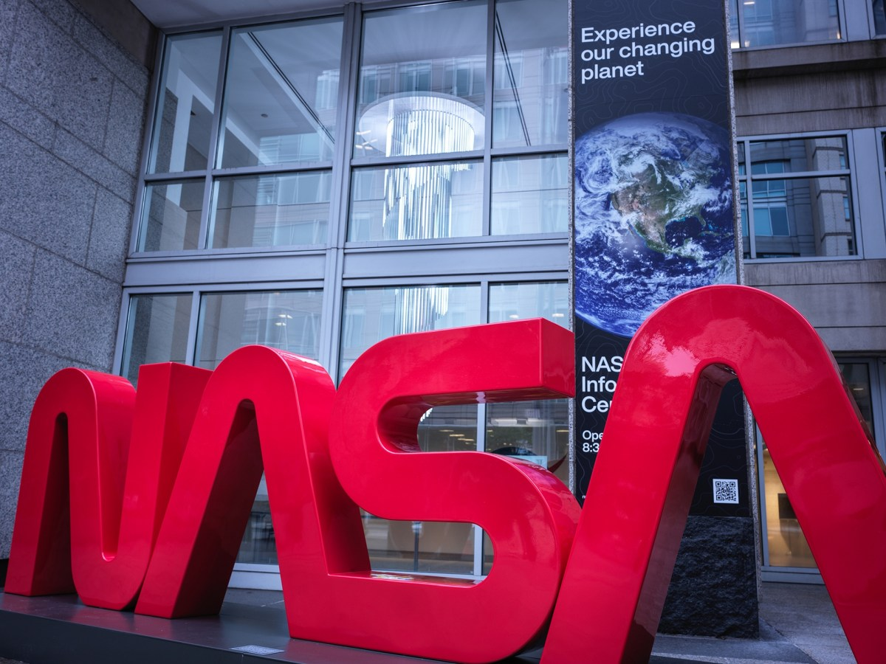
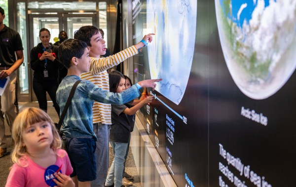
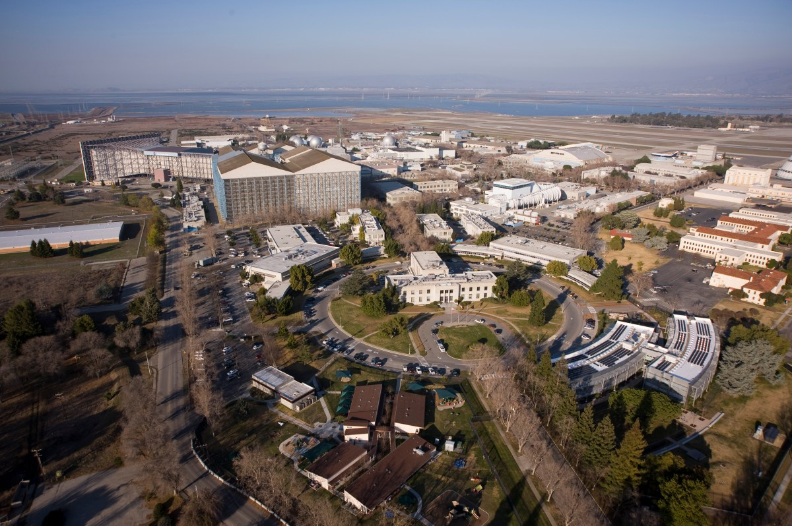
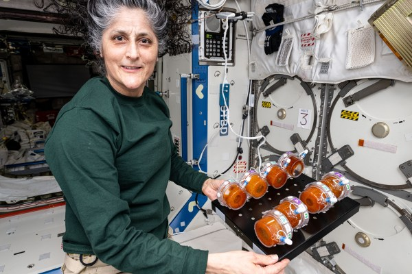

INSIDE NASA
NASA Head Quarters
NASA Headquarters, in Washington, provides overall guidance and direction to the agency, under the leadership of the Administrator. Ten field centers and a variety of installations around the country conduct the day-to-day work in laboratories, on air fields, in wind tunnels, and in control rooms. Together, this skilled, diverse group of scientists, engineers, managers, and support personnel share the Vision, Mission, and Values that are NASA



Ames Research Center
NASA’s Ames Research Center, one of ten NASA field centers, is located in the heart of California’s Silicon Valley. Since 1939, Ames has led NASA in conducting world-class research and development in aeronautics, exploration technology and science aligned with the center’s core capabilities.



-
Armstrong Flight Research Center
NASA’s primary center for high-risk, atmospheric flight research and test projects, with access to 301,000 acres of remote land, year-round flying weather, and the Bell X-1 Supersonic Corridor.


Plans of NASA
-
Past Plans of NASA
- Land humans on the Moon → achieved with the Apollo program
- Develop reusable spacecraft → done through the Space Shuttle program
- Launch satellites for communication and research
- Study Earth from space using observation systems
- Explore nearby planets using robotic missions
-
Present Plans of NASA
- Returning humans to the Moon with the Artemis program
- Exploring Mars with missions like the Perseverance Rover
- Studying the universe using the James Webb Space Telescope
- Monitoring climate change and Earth systems
- Supporting astronauts aboard the International Space Station
-
Future Plans of NASA
- Send humans to Mars
- Build a long-term human presence on the Moon
- Develop more advanced spacecraft and AI systems
- Explore deep space beyond our solar system
- Make space travel more sustainable and long-term
Missions of NASA
- Lunar exploration programs
- Mars exploration missions
- Deep space observation using James Webb Space Telescope
- Earth observation through satellites and climate research missions
- Human spaceflight missions including space stations and astronaut training